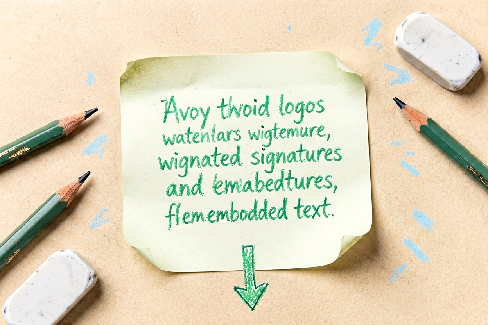
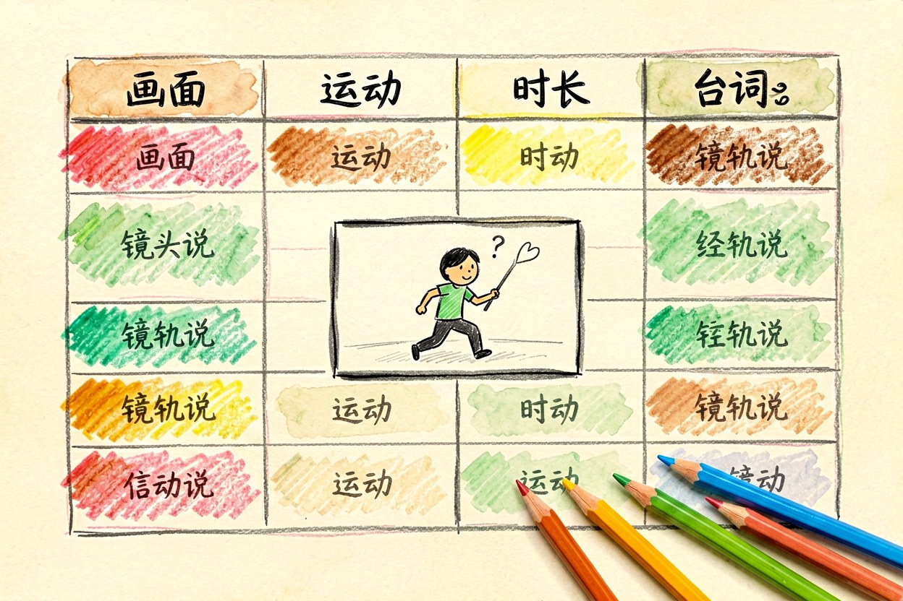
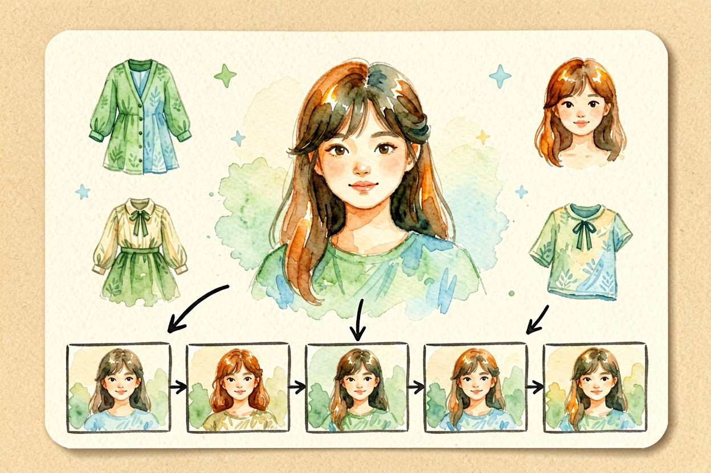
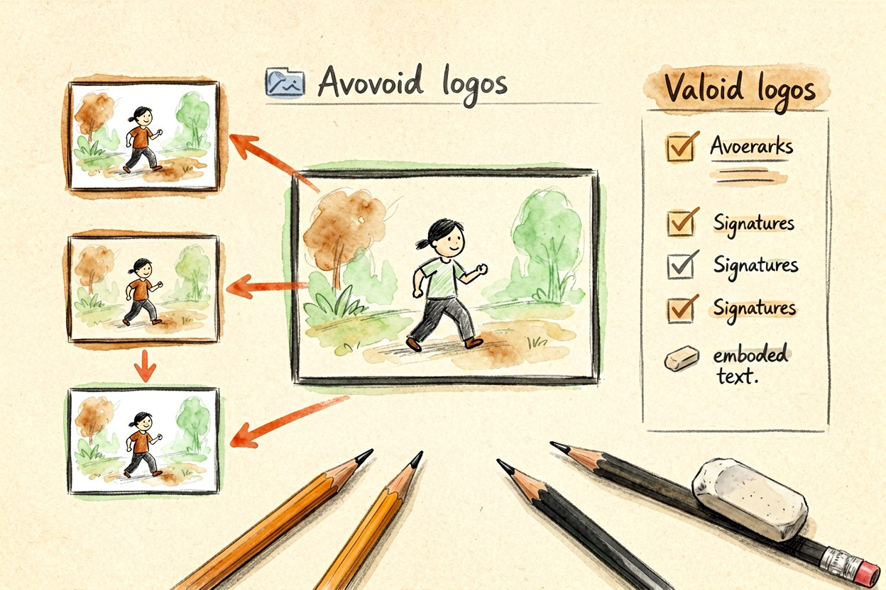
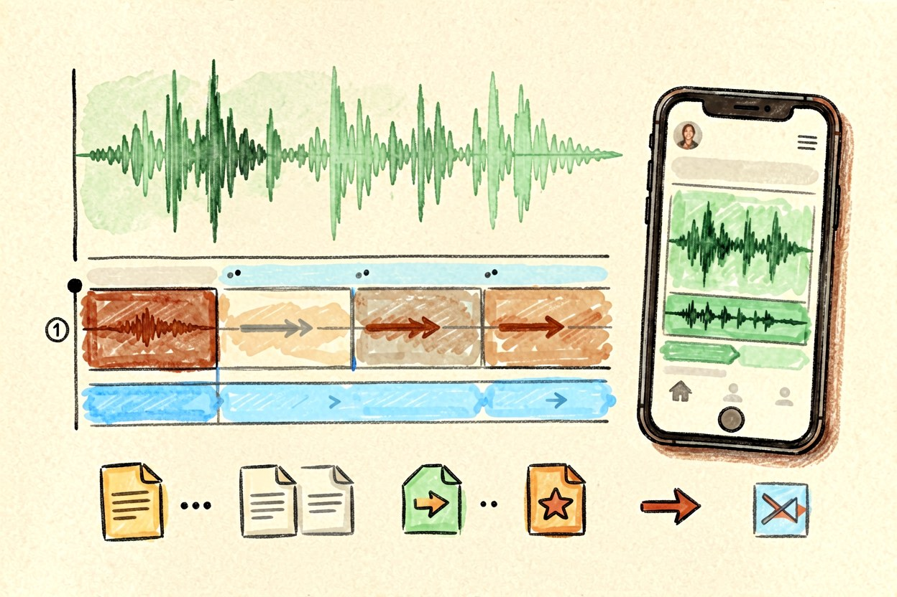

AI 短剧怎么做：从剧本到成片的完整流程
一条三分钟的短剧，真正费时间的不是生成，而是让十个镜头里的主角看起来像同一个人。
AI短剧制作最常见的翻车，是把它当成一次生成任务，输入一句话就等成品。能看的成片靠的是前面几张表和一张参考图，把流程拆开、每步单独验收，废片率会明显下降。定标准比挑工具重要得多。
AI短剧制作第一步：把故事收成一句话

先别急着开软件。用一句话说清"谁、在什么处境、想要什么、被什么挡住"，这句立住了，后面每个镜头才有取舍依据。题材越具体越好，"外卖员在暴雨夜送最后一单"就比"都市逆袭"好用得多。一句话能站住，再扩成分集大纲，每集只解决一个小冲突，别一集塞三个转折。大纲里顺手写下每集的结尾钩子，真到剪辑时你会庆幸提前想过。
二、分镜表：一个镜头只安排一件动作

分镜表是整条片子的骨架。每个镜头写四件事：画面内容、镜头运动、时长、台词或字幕。一个镜头只安排一个主要动作，二到五秒最稳。让模型同时表演走、转身、说话、拿东西，画面必然变形。分镜表用表格或纯文本都行，关键是每行都能独立交给一次生成任务，脱离上下文也能看懂：
shot: 03
duration: 4s
subject: 外卖员推门进入便利店
camera: 缓慢前推
dialogue: 还有热的吗三、锁角色：让二十个镜头是同一个人

人物变形是短剧的头号问题。做法是先出一张角色设定图，正面半身、光线干净，再把这张图作为参考图喂给每个镜头。参考图比提示词管用，"三十岁短发男性"这样的文字描述会得到二十张不同的脸。角色图定稿后单独建档，之后每次生成都从这里取。服装、发型、配件也写进参考说明，换场不换装，观众才认得出。
四、逐镜生成与验收标准

先低成本试构图，确认了再出高清版。每个镜头存三到四个版本，挑最好的一个用，别在一个镜头上反复加描述词硬磨。重生成时只改一个变量，别同时动描述词和参考图，否则你不知道是哪一步起了作用。验收要看三处：第一帧、中间帧、最后一帧。只看缩略图会漏掉中段变形。手部、文字、镜面反射最容易出错，出现明显错误直接重新生成，不要指望剪辑能盖住。
五、配音、剪辑与交付

先把台词录好，再按语音长度反推镜头时长，别反过来做。字幕按目标平台重排，竖屏要留出安全边距，同时单独外挂一份字幕文件备用。转场别超过两种，短视频的节奏靠剪辑密度，不靠特效堆叠。交付前在手机上看一遍，电脑上清楚的字体到手机上经常糊成一片。
AI短剧制作拼的不是模型强弱，是流程纪律。分镜表没写完就别开机，参考图没锁定就别生成，验收没过的镜头也别凑合用。每周只改一个环节，做完留一版归档，三个月后回头看，你会清楚自己到底卡在哪一步。
本文信息核对于 2026-09-14。AI 产品的价格、免费额度与功能变动频繁，实际以各工具官网当前说明为准。